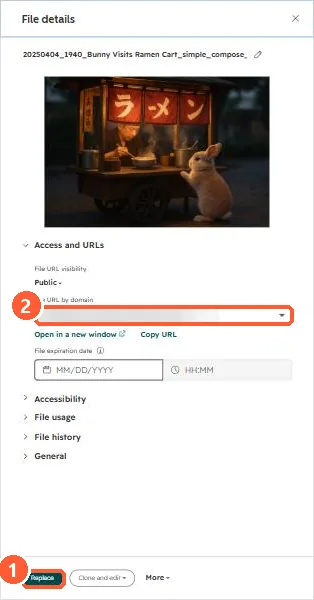

Short answer
HubSpot's KB: in the file details panel, click Replace to upload an updated version at the same file URL. The old file may be cached for up to two hours. Files are on public URLs by default, so anyone with the link can open them.
1. File details
A file in my demo portal, URL blurred.


2. In emails
See PDFs in emails.